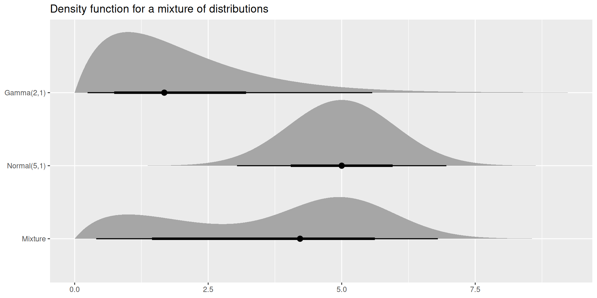

[1] 0.4338162Accessible and extensible design for statistical computing on distributions
19th September 2025 @ RSAA25
Mitchell O’Hara-Wild, Monash University
Using distributions in R
As a statistical computing language, writing analysis R code often involves distributions.
Common uses of distributions
- Predictions from models
- Simulation studies
- Hypothesis testing
- Teaching statistics
Plentiful packages
The probability distributions CRAN Task View lists over 300 packages for probability distributions!

Using distributions in R
Problems with probability
Using distributions in R is unnecessarily complex!
Difficult distributions
There are two fundamental problems that make distributions difficult to use in R.
- The design of distribution functions
- The distribution outputs of models and tests
A better way?
Improved distributional designs overcomes these issues.
R’s distribution functions
The included distributions in R (and many extension packages) use p/d/q/r functions for statistical operations on distributions.
The p/d/q/r functions
These functions allow you to calculate statistical operations from distributions:
p: The ‘probability’ (CDF)d: The ‘density’ (PDF)q: The ‘quantiles’r: The ‘random’ samples
Some packages also define m functions for moments!
R’s distribution functions
Using p/d/q/r functions
These operation prefixes are used in conjunction with the distribution’s shape. The general form is:
<op><shape>(<args>, <parameters>)
For example, the density (p) at 0.5 of a Normal (norm) distribution with mean 1 and standard deviation 3 is:
pnorm(q = 0.5, mean = 1, sd = 3)
The quantile at probability 0.975 is:
qnorm(p = 0.975, mean = 1, sd = 3)
[1] 6.879892Name conflicts
Ever saved your dataset as df or dt? Think again!
R’s distribution functions
Risky recycling
These p/d/q/r functions are vectorised and fast 🎉
How these functions vectorise inputs is surprising 👻
Let’s calculate 95% intervals of N(1,9).
R’s distribution functions
Well designed functions have…
- Clear and descriptive function names
- Well-defined and named parameters
- Minimal code duplication
- Predictable behaviour
Design drawbacks
The p/d/q/r design leaves much to be desired.
- Short and confusing function names
- Mixed parameters between operation and distribution
- Surprising recycling behaviour
R’s modelling output
The distributional nature of predictions and hypothesis testing is de-emphasised in R.
Predicting penguins
Consider the output when using predict() on a lm() for the length of penguin bills using depth and species.
Where’s the uncertainty!
By default, predictions only return the expected value.
R’s modelling output
Finding uncertainty!
To obtain the other parameters for the distribution, we set se.fit = TRUE in predict().
$fit
1 2 3 4 5 6
46.10333 51.48517 48.21763 48.40983 49.94750 49.37088
$se.fit
1 2 3 4 5 6
0.4769975 0.4685605 0.3082198 0.3020842 0.3333431 0.3054341
$df
[1] 336
$residual.scale
[1] 2.444663This gives more than just standard errors… but still no probability distribution.
R’s modelling output
Here’s the code to obtain 95% prediction intervals for the penguins data:
[45.165056, 47.041611]95
[50.563487, 52.406850]95
[47.611342, 48.823910]95
[47.815620, 49.004049]95
[49.291799, 50.603204]95
[48.770072, 49.971680]95Not quite right
The above calculations are for confidence intervals, not prediction intervals! Did you notice? Probably not!
R’s modelling output
The correct code for prediction intervals is:
[41.203878, 51.002789]95
[46.588864, 56.381473]95
[43.370784, 53.064468]95
[43.564487, 53.255182]95
[45.094230, 54.800773]95
[44.524716, 54.217036]95Making mistakes
There’s a lot to know about regression, distributions, and R functions to get correct prediction intervals.
It’s easy to make mistakes (or ignore uncertainty).
Better distributions for R
The distributional package makes it simpler to create and use distributions in R.
Design improvements
The package design overcomes all earlier problems by:
Creating distributions separately from operations
(with clear function and variable names)
Statistical computing done with common functions
(the same function works for all distributions)
Applying predictable recycling rules

Better distributions for R
The package currently supports:
- 21 continuous distributions,
- 9 discrete distributions,
- p/d/q/r functions via
dist_wrap(), - sample, degenerate and percentile distributions.
Vectorised distributions
Creating multiple distributions
The package supports multiple distributions in a vector.
<distribution[4]>
[1] N(1, 9) N(3, 4) N(-1, 16) N(2, 1) You can even mix distributions of different shapes.
Vectorised distributions
Since distributions are vectors, they work great with data frames and the tidyverse.
# A tibble: 4 × 2
x y
<int> <dist>
1 1 N(1, 9)
2 2 N(3, 4)
3 3 N(-1, 16)
4 4 N(2, 1)Distributional predictions from models
This allows model predictions to return entire distributions, making it easier to get the correct results.
Vectorised distributions
The fable package produces forecasts with distributions, making later analysis easy.
# A fable: 10 x 4 [1Y]
# Key: .model [1]
.model index
<chr> <dbl>
1 ARIMA(value) 1989
2 ARIMA(value) 1990
3 ARIMA(value) 1991
4 ARIMA(value) 1992
5 ARIMA(value) 1993
6 ARIMA(value) 1994
7 ARIMA(value) 1995
8 ARIMA(value) 1996
9 ARIMA(value) 1997
10 ARIMA(value) 1998
# ℹ 2 more variables: value <dist>, .mean <dbl>Statistical computation
The p/d/q/r functions have more descriptive alternatives:
p->cdf(): The CDFd->density(): The density (PDF)q->quantile(): The quantiler->generate(): Random samples
Distributional operations
These same functions are the same for any distribution.

Statistical computation
To calculate statistics like intervals:
[[1]]
[1] -4.879892 6.879892
[[2]]
[1] -0.919928 6.919928
[[3]]
[1] -8.839856 6.839856
[[4]]
[1] 0.04003602 3.95996398Or simply use the hilo() function:
Statistical computation
Other operations
There are many more statistics than p/d/q/r.
log_likelihood()/likelihood()hilo()hdr()support()mean()variance()/covariance()skewness()kurtosis()
Vectorised operations
Vectorised operations in distributional are safer than the p/d/q/r equivalents.
Vectorising in two ways
There are two types of operation arguments:
vector/matrixinputsVectorises across distributions, then arguments.
This approach is simpler, especially single arguments.
list/data.frameinputsVectorises across arguments, then distributions.
This approach is more flexible and powerful.
Vectorised operations (vectors)
<distribution[3]>
[1] N(0, 1) Beta(5, 1) Γ(2, 1) Vectors/matrices apply the same operation inputs to each distribution.
Vectorised operations (vectors)
Distributions in data analysis
This also works well with data frames.
# A tibble: 3 × 2
y
<dist>
1 N(0, 1)
2 Beta(5, 1)
3 Γ(2, 1)
# ℹ 1 more variable: `density(y, at = 0.65)` <dbl>Vectorised operations (lists)
<distribution[3]>
[1] N(0, 1) Beta(5, 1) Γ(2, 1) Lists/data.frames recycle each input argument to the length of distributions.
Vectorised operations (lists)
<distribution[3]>
[1] N(0, 1) Beta(5, 1) Γ(2, 1) This also allows vectorisation across both inputs and distributions.
Vectorised operations (lists)
Distributions in data analysis
This also works really well with data frames.
# A tibble: 3 × 2
y d1
<dist> <dbl>
1 N(0, 1) 0.323
2 Beta(5, 1) 0.893
3 Γ(2, 1) 0.339Modifying distributions
Distributions can be used in the creation of new distributions.
dist_inflated()dist_truncated()dist_transformed()dist_mixture()
Modifying distributions
Transforming distributions
Where possible, the transformation directly changes the underlying distribution.
Modifying distributions
Transforming distributions
In other cases, the transformation falls back to a ‘transformed’ distribution.


Visualising distributions
library(ggdist)
library(ggplot2)
df <- tibble::tibble(
name = c("Gamma(2,1)", "Normal(5,1)", "Mixture"),
dist = c(dist_gamma(2,1), dist_normal(5,1),
dist_mixture(dist_gamma(2,1), dist_normal(5, 1), weights = c(0.4, 0.6)))
)
ggplot(df, aes(y = factor(name, levels = rev(name)))) +
stat_dist_halfeye(aes(dist = dist)) +
labs(title = "Density function for a mixture of distributions", y = NULL, x = NULL)
Summary
Key ideas
- Be careful when using p/d/q/r functions
- Good design can prevent some common mistakes
- Consider using distributional in analysis/packages
- It’s also a great teaching tool!
Future work
- Add more distributions (help please!)
- Convolutions of distributions
- Add moments of distributions
- Create a hex sticker

Thanks for your time!
Final remarks
Uncertainty shouldn’t be an afterthought.
Easier statistics is better statistics.
Made with ❤️ and vctrs.
Consider contributing to the package.
(distributions, documentation, ideas…)